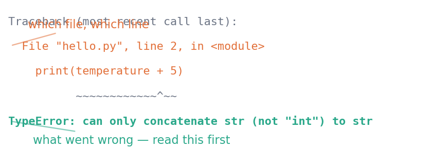

You are going to spend more time reading error messages than writing code. That is not a sign of doing it badly; it is what programming is.
So this unit is only half about installing Python. The other half is learning to read what the machine tells you when something goes wrong — because for the next few weeks you are working alone, and the traceback is the only thing that can tell you what happened.
1.1 Before you start
Nothing. This is the first unit, and it assumes you have never written a line of code.
You will need a computer you can install software on, and about an hour.
Quick check. Can you find your computer’s terminal? On Windows it is PowerShell; on macOS, Terminal; on Linux you already know.
TipShow the answer
Windows: press the Start button and type powershell. macOS: press ⌘ + Space and type terminal.
A window opens with a line of text and a blinking cursor. That is a prompt: it is waiting for you to type a command. Nothing you type there will break your computer.
1.2 The idea
Python is a language for giving a computer instructions. You write instructions in a plain text file; a program called the interpreter reads that file and carries them out, one line at a time, top to bottom.
That is genuinely all that happens. There is no compilation step to think about and no magic. When something goes wrong, it went wrong on one specific line, and Python will tell you which.
There are two ways to run instructions, and you will use both:
A script is a file ending in .py. You run the whole thing at once. Use scripts when a task should run start-to-finish the same way every time.
A notebook is a file ending in .ipynb, made of cells you run one at a time, with output appearing underneath. Use notebooks to explore, and to mix explanation with code.
These notes are written as notebooks-in-spirit: every code block you see was actually run, and its output is printed underneath.
1.3 The mechanics
1. Install Python
Download it from python.org/downloads. These notes use Python 3.11; anything from 3.10 will work.
On Windows, tick “Add python.exe to PATH” on the first installer screen. It is easy to miss and annoying to fix afterwards. If you missed it, the quickest repair is to run the installer again and choose Modify.
2. Make a folder and an isolated environment
In your terminal:
mkdir bootcampcd bootcamppython-m venv .venv
venv stands for virtual environment. It creates a private copy of Python inside this folder, so anything you install here cannot disturb anything else on your machine. Activate it:
# macOS or Linuxsource .venv/bin/activate# Windows PowerShell.venv\Scripts\activate
Your prompt now starts with (.venv). You must do this each time you open a new terminal. Forgetting is the single commonest cause of “but I installed that already”.
Versions are pinned so the numbers you get match the numbers printed here exactly.
4. Your first program
Create a file called hello.py containing one line:
print("Hello from my own machine")
Run it:
python hello.py
5. Read the traceback
Now make it fail on purpose. Change the file to:
temperature ="22C"print(temperature +5)
Python stops and prints a traceback. It looks alarming and is not. It is a report with a fixed shape, and you read it from the bottom.
temperature ="22C"print(temperature +5)
---------------------------------------------------------------------------TypeError Traceback (most recent call last)
CellIn[1], line 2 1 temperature = "22C"----> 2print(temperature+5)
TypeError: can only concatenate str (not "int") to str

Figure 5.1: Every traceback has this shape. The last line names what went wrong; the lines above say where. Read the bottom line first, then look at the line of your own code it points to.
The bottom line is the answer: you tried to join a piece of text to a number, and Python will not guess what you meant. The lines above tell you it happened in hello.py, on line 2.
1.4 Worked example
A traceback, diagnosed and fixed.
Suppose you are asked to add up three measurements and one of them came from a text file, so it is still text:
---------------------------------------------------------------------------TypeError Traceback (most recent call last)
CellIn[3], line 2 1 measurements = [12.5, 13.1, "12.9"]
----> 2 total = sum(measurements)TypeError: unsupported operand type(s) for +: 'float' and 'str'
Work through it in the fixed order.
Bottom line first.TypeError: unsupported operand type(s) for +: 'float' and 'str'. Something tried to add a number to a piece of text.
Which line? The traceback points at the sum(...) call.
What actually reached it? Look at the data:
measurements = [12.5, 13.1, "12.9"]for value in measurements:print(repr(value), type(value).__name__)
12.5 float
13.1 float
'12.9' str
There it is. The third value is '12.9' with quotation marks — text that looks like a number. repr() shows the quotation marks that print() hides, which is why it is the right tool for this question.
The fix, stated deliberately rather than patched:
measurements = [12.5, 13.1, "12.9"]numbers = [float(value) for value in measurements]print(sum(numbers))
38.5
Notice what we did not do: we did not delete the awkward value, and we did not wrap the whole thing in something that swallows the error. We found out what was actually in the data and converted it on purpose. That habit is worth more than any syntax in this unit.
1.5 Try it yourself
Exercise 1 Predict the final line of the traceback, then run it.
print(x)
TipShow the solution
NameError: name 'x' is not defined.
Python has no idea what x is, because nothing has ever assigned a value to that name. This is different from a TypeError, which means the name does exist but holds something the operation cannot use.
Exercise 2 This one fails before it runs at all. Why is that different?
print("Hello
TipShow the solution
SyntaxError: unterminated string literal.
The closing quotation mark is missing, so Python cannot even parse the file into instructions. A SyntaxError is raised before anything executes, which is why you can get one from a line far below code that would otherwise have run.
The practical tell: if nothing at all printed, suspect a syntax error. If some output appeared and then it stopped, the program was running and hit a problem partway.
Exercise 3 You run a script and get ModuleNotFoundError: No module named 'pandas', but you installed pandas ten minutes ago. What is the most likely cause?
TipShow the solution
You are not in the environment you installed into. Check whether your prompt still shows (.venv); if not, activate it again.
The general shape of this error: Python is looking, and not finding, so either it was never installed or you are asking a different Python. Confirm which interpreter is running with the check in the next section.
1.6 Check it in Python
Every other unit ends by checking a claim. This one checks your setup, which is the claim that matters here.
Two things to look at. The version should start with 3.11 (3.10 or later is fine). And the interpreter path should point inside your .venv folder — if it points somewhere else, you are running the wrong Python, and that explains almost every “but I installed it” problem you will hit.
Keep this snippet. When you ask anyone for help, the answer is more useful if you paste its output with your question.
1.7 Common wrong turns
Where this usually goes wrong
Reading the traceback from the top
The top is the least useful part. The bottom line names the problem; work upwards only if you need to know how execution got there.
Assuming an error means you cannot program
Everyone who writes code sees errors constantly, including people who have done it for thirty years. An error is the program telling you something specific and true. It is information, not a verdict.
Forgetting to activate the environment
If your prompt does not begin (.venv), you are using a different Python with different packages. This causes more confusion in week one than any other single thing.
Typing the prompt character
Examples sometimes show $ or > at the start of a line. That is the prompt, not part of the command. Type only what follows it.
Changing several things at once when stuck
Then you cannot tell which change helped. Make one change, run it, look at the result.
Pasting a fix you do not understand
It may work today and leave you unable to fix it tomorrow. Before you keep any snippet — from a forum, or from an assistant — make sure you can say what each line does.
1.8 Check yourself
Answers are at the foot of the page.
Which line of a traceback should you read first?
the first b. the last c. the one naming your file d. all of them, in order
What is the practical difference between a SyntaxError and a NameError?
Why does a virtual environment matter, in one sentence?
You see ModuleNotFoundError for a package you know you installed. What is the first thing to check?
A script prints two lines and then stops with an error. Can the problem be a syntax error? Why or why not?
TipShow the answers
(b) the last. It names the exception type and the message — what actually went wrong. The lines above tell you where, which only matters once you know what.
A SyntaxError means Python could not read your file as instructions, so nothing ran at all. A NameError means the file ran fine until it reached a name that had never been given a value.
It keeps this project’s packages separate from everything else on your machine, so installing something here cannot break something there.
Whether the environment is active — does your prompt show (.venv)? Then confirm with sys.executable that the running interpreter is the one inside it.
No. A syntax error is raised before any code executes, so no output would have appeared. Output followed by a stop means the program was running and hit a problem partway through — which is a useful diagnostic in itself.
Where this shows up next
P2 looks at what values actually are, and why "22C" and 22 behave so differently. P11 returns to environments and versions, and to asking for help in a way that gets a useful answer. Every Mathematics and Statistics unit ends with a short Check it in Python block — the setup you have just built is what makes those runnable.